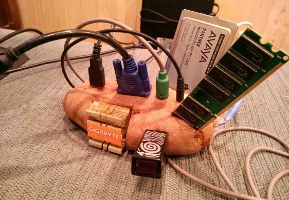

Kapitola 4: Počítačové sítě
Počítačová síť (computer network) je v informatice označení pro technické prostředky, které realizují spojení a výměnu informací mezi počítači. Umožňují tak uživatelům komunikaci podle určitých pravidel, za účelem sdílení využívání společných zdrojů nebo výměny zpráv..

Síťová architektura
- Síťová architektura: struktura řízení komunikace rozdělená do vrstev, kde každá vrstva poskytuje služby té vyšší a komunikace je řízena protokoly.
- Standardizace: vychází z referenčního modelu OSI (Open Systems Architecture), přičemž praktickou realizací je dnes nejpoužívanější sada protokolů TCP/IP.
Dělení sítí podle přepojování
- Komutační síť: starší technologie založená na přepojování okruhů, typická pro telefonní sítě a ISDN.
- Paketová síť: data jsou dělena na pakety, které putují sítí nezávisle různými trasami (např. Ethernet, ATM); cílová cesta není předem známa.
Dělení podle postavení uzlů
- Peer-to-peer (P2P): architektura „rovný s rovným“, kde jsou si všechny počítače rovnocenné a neexistuje centrální správa.
- Klient–server: hierarchické uspořádání, kde nadřazený server poskytuje služby a zdroje podřízeným klientům (pracovním stanicím).
Dělení sítí podle signálu
- Analogová síť: pracuje se spojitým proměnným signálem, je náchylnější k rušení.
- Digitální síť: využívá diskrétní stavy (obvykle nuly a jedničky), což umožňuje snadnější ukládání dat a udržení kvality bez degradace.
Dělení sítí podle rozlehlosti
- PAN (Personal Area Network): osobní síť s nejmenším dosahem (metry), propojuje osobní zařízení (Bluetooth, IrDA).
- LAN (Local Area Network): lokální síť v rámci jedné či několika blízkých budov (nejčastěji Ethernet).
- MAN (Metropolitan Area Network): metropolitní síť propojující lokální sítě v rámci města.
- WAN (Wide Area Network): rozlehlá síť spojující LAN a MAN sítě napříč státy, kontinenty či celou planetou.